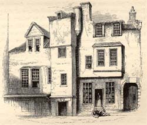
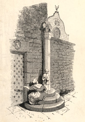
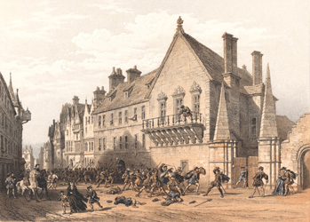

|
|
||
|
|
Home | Corson Collection | Biography | Works | Image Collection | Recent Publications | Portraits | Correspondence | Forthcoming Events | Links | E-Texts | Contact Chronicles of the Canongate (First Series)First Edition, First Impression: Chronicles of the Canongate. By the Author of "Waverley," &c. In Two Volumes. Vol. I (II). Edinburgh: Printed for Cadell and Co., Edinburgh; And Simpkin and Marshall, London, 1827. Composition | Synopsis | Reception | Links CompositionChronicles of the Canongate is the first work of fiction to which Scott put his own name. Although the title page credits the Chronicles to the 'Author of Waverley', an autobiographical introduction is signed 'Walter Scott'. Comprised of two short stories 'The Highland Widow' and 'The Two Drovers' and a novella 'The Surgeon's Daughter', this is Scott's only collection of shorter fiction. Each story is set in the second half of the eighteenth century and deals with the exodus of Scots from their post-Union, post-Culloden homeland to seek fortune elsewhere. A linking narrative is provided by 'Chrystal Croftangry', a resident in the Canongate, Edinburgh, who writes up the tales from the recollections of his friends, Mrs Bethune Baliol and Miss Kate Fairscribe. The Chronicles were Scott's first experiments in fiction since the financial crash of 1825-26. When Scott first proposed the new publication in May 1826, he was living in reduced circumstances and was short of money for personal expenses. He had been forced to sell his house in Castle Street (see Homes) and to seek rented lodgings. Abbotsford House was beyond his creditors' grasp, as it had been secured to his son Walter on his marriage in 1825, but the estate had been sequestrated. Scott was particularly in need of ready cash to fit out his nephew, another Walter, for a voyage to India, where he was sailing as an army engineer. On 12 May 1826, James Ballantyne approached Robert Cadell on Scott's behalf to propose the publication of an 'Eastern tale'. Cadell, Archibald Constable's former partner, had just set up in business under his own name and eagerly grasped the opportunity to launch his list with a work by the best-selling 'Author of Waverley'. Cadell proposed that the tale appear in two volumes, a ploy to prevent Constable's trustees from claiming the profits from the publication in order to pay their own creditors. In a desperate attempt to avoid financial ruin, Constable had offered as surety three unfinished works by Scott: Woodstock, The Life of Napoleon Buonaparte and an unnamed novel. It was not until July 1827 that a court ruling determined that the trustees of James Ballantyne and Co. rather than those of Archibald Constable and Co. should benefit from these three publications and subsequent works by Scott. For the moment Scott feared that a three-volume work (the standard format for a novel) would be seized upon as the unnamed novel. Indeed, he was initially reluctant even to sign the work as the 'Author of Waverley' until he realized that that anonymity would damage sales. A further reason for turning to shorter fiction rather than a new novel was that Scott could more easily work on it in tandem with The Life of Napoleon Buonaparte. There were many intervals in the composition of Scott's massive biography of the French Emperor as he was forced to wait for essential source material. These he filled with work on the Chronicles. The short story was only just beginning to emerge as a popular literary genre in the 1820s. Scott, however, had already demonstrated his mastery of the form in 'Wandering Willie's Tale', a narrative embedded in his 1824 novel Redgauntlet. The Chronicles took longer to compose than any of Scott's earlier works of fiction except Waverley. The composition is unusually well-documented, and has been expertly pieced together by Claire Lamont, editor of the recent Edinburgh Edition of the Chronicles (2000), to which the following account is greatly indebted. In addition to the surviving manuscript and correspondence between Scott, Ballantyne, and Cadell, Dr Lamont was able to draw on three new sources: Scott's Journal (begun in 1825), the meticulously-kept records of Robert Cadell, and those of Scott's and Ballantyne's Trustees. Three days after Ballantyne proposed the Chronicles to Cadell, Scott's wife Charlotte died after a lengthy illness. On May 27, a mere five days after the funeral, Scott threw himself into work, turning not to the promised 'Oriental tale' but to 'The Highland Widow'. He began with a description of Mrs Martha Bethune Balliol, the fictional source of a tale which, in fact, Scott had first heard from a family friend Mrs Anne Murray Keith. (For more information on sources, see 'The Highland Widow'). The composition was interrupted on 1 June when Scott resumed work on The Life of Napoleon Buonaparte. When Scott returned to the Chronicles on 18 June, it was to flesh out the narrative framework for the collection, introducing the fictional editor Chrystal Croftangry and his circle of friends in Edinburgh's Canongate. By 9 July 1826 he had completed the Croftangry narrative and had begun work on 'The Highland Widow' proper. He and Cadell had also finalized the title for the collection (abandoning the earlier working titles Baliol's Lodgings and The Canongate Chronicle). There followed, however, a year-long gap in the composition of the Chronicles, as Scott concentrated exclusively on his Napoleon. Work on the biography took a good deal longer than Scott had anticipated, and necessitated research trips to London and Paris between 12 October and 25 November 1826. Having originally planned to publish the Chronicles in November 1826, Cadell gradually realized that it would not appear until after Napoleon, and put the publication date back to November 1827. Cadell grew increasingly frustrated over the non-appearance of a book destined to launch him as a publisher, but was partly appeased when Scott's Trustees appointed him as Edinburgh publisher of Napoleon. Scott finally finished writing Napoleon on 7 May 1827 but almost immediately began work on Tales of a Grandfather, a history of Scotland for children. Only on 20 June did he at last return to Chronicles of the Canongate, making a start on 'The Surgeon's Daughter' and completing 'The Highland Widow' by 25 June. A few months previously an unexpected event had taken place which would now influence the development of the Chronicles. In February 1827, Scott had been surprised into acknowledging his authorship of the Waverley Novels before a large gathering at a Theatrical Fund Dinner. In truth, the secret had been untenable since the financial crash of 1825-26 which had exposed the extent of Scott's business engagements with James Ballantyne and Archibald Constable. Scott now decided to extend the confession to his worldwide readership by means of a signed preface to the Chronicles. The preface was complete by 27 June, and Scott set to work on the second episode of the Chronicles, 'The Two Drovers'. He made rapid progress and had brought the tale to a conclusion by 15 July. Immediately after, he plunged back into Tales of a Grandfather, finishing the first volume on 26 July. The speed with which Scott worked during this period was extraordinary. In the two and a half years after he begun Napoleon, he wrote almost 1.5 million words. Scott now finally turned his attention to 'The Surgeon's Daughter'. The 'eastern tale', the first to be announced, was the last to be written. Scott worked steadily until 22 August when he began to feel the need for first-hand information on Indian phrases and localities. He longed to talk to his neighbour Colonel James Fergusson, an Indian veteran, but he was away. Scott had to wait until the beginning of September for the colonel to return and supply the needed local colour.  Scott finished writing the Chronicles on 16 September 1827. They were eventually published in two volumes on 30 October 1827 in Edinburgh. Cadell, however, was pre-empted by the pirate publication of 'The Two Drovers' in the London Weekly Review for 20 October and of the Introduction in The Literary Gazette for 27 October. The texts had been leaked when pre-publication sheets had been sent to London for forwarding to the Paris firm of Galignani who published a continental English-language edition shortly after London publication. SynopsisFor a synopsis of each of the individual tales (along with information on sources and useful internet links), click on the links below: ReceptionThe Chronicles were largely well received by reviewers. There was general pleasure at the appearance of a new work of fiction by Scott after the unusually long gap of eighteen months since Woodstock. There was widespread approval too of Scott's decision to return to his home-ground of Scotland for his subject matter. 'The Highland Widow' was widely considered the strongest piece in the collections. 'The Surgeon's Daughter', however, came in for robust criticism. The New Monthly Magazine was particularly harsh, judging that 'the extravagancies are gross and daring' and lamenting that the dénouement was 'just that of a hundred ballets and melodrames'. Despite critical plaudits, and the interest awakened by the signed preface, sales were disappointing and Cadell would reject Scott's subsequent proposal of a further volume of short fiction.
Links
*For internet resources and recent critical articles on the individual tales, follow the links above. Last
updated: 19-Dec-2011 |
|